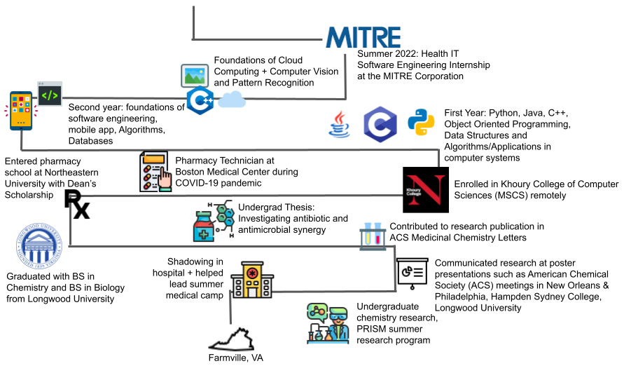

My Journey to CS
Graduating Longwood University with a bachelor's of science in chemistry and biology, I went to pharmacy school at Northeastern University and entered as the top 10-15% of my class on scholarship. In 2020, I changed my career to a path in CS. I am interested in medtech and applying knowledge and experience within science/healthcare to areas in CS.